Hokusai, fog over water, cats with opinions…
Ask Curio
Lookingforcatswithattitude.
Reading your brief
Curated an exhibit of 10 works
1s

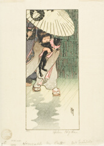
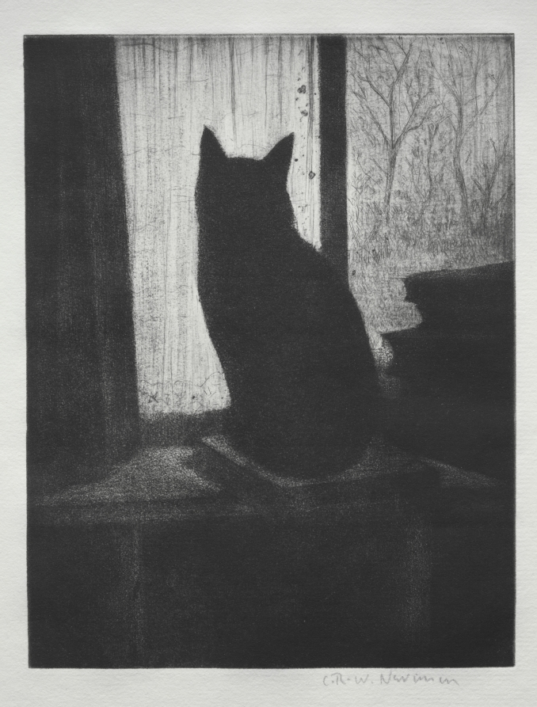

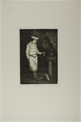
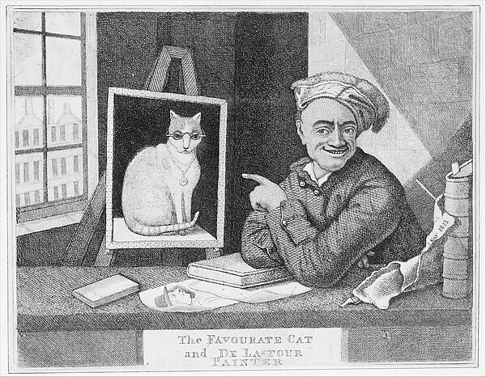

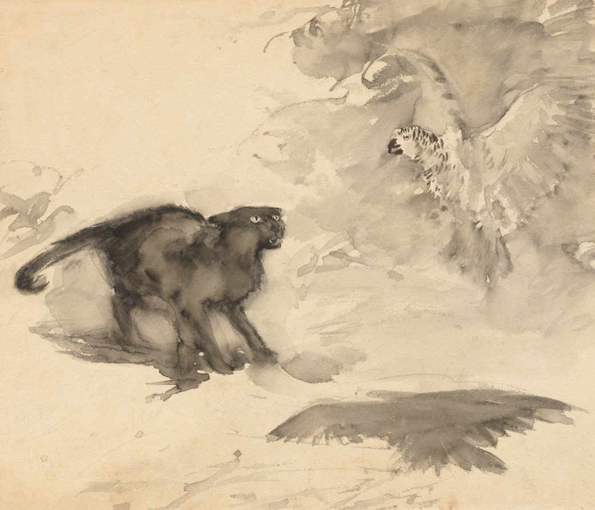
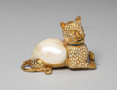
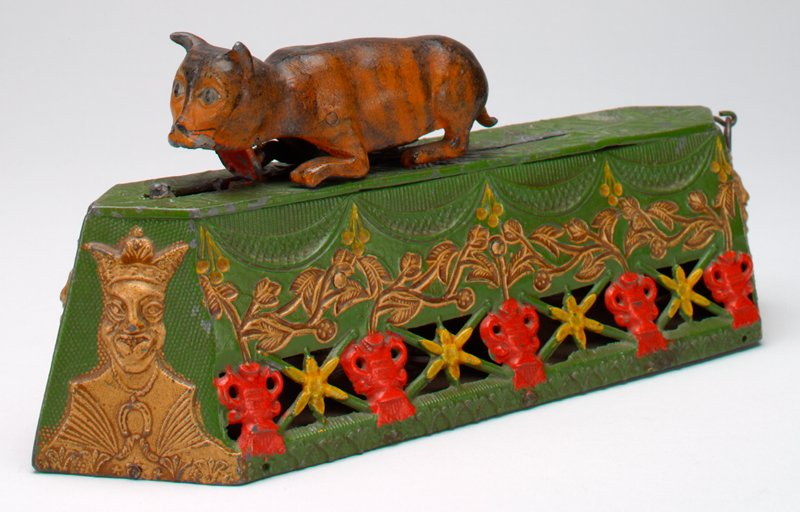

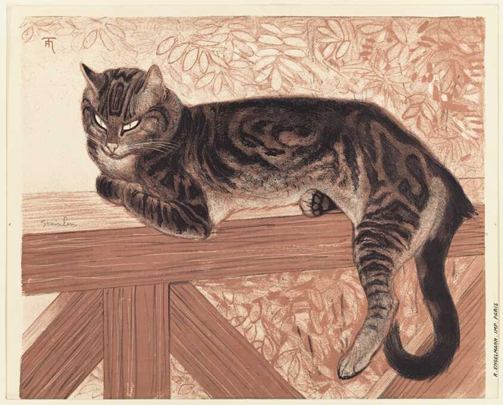
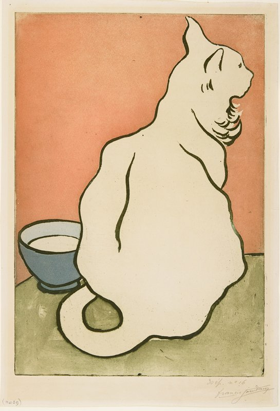
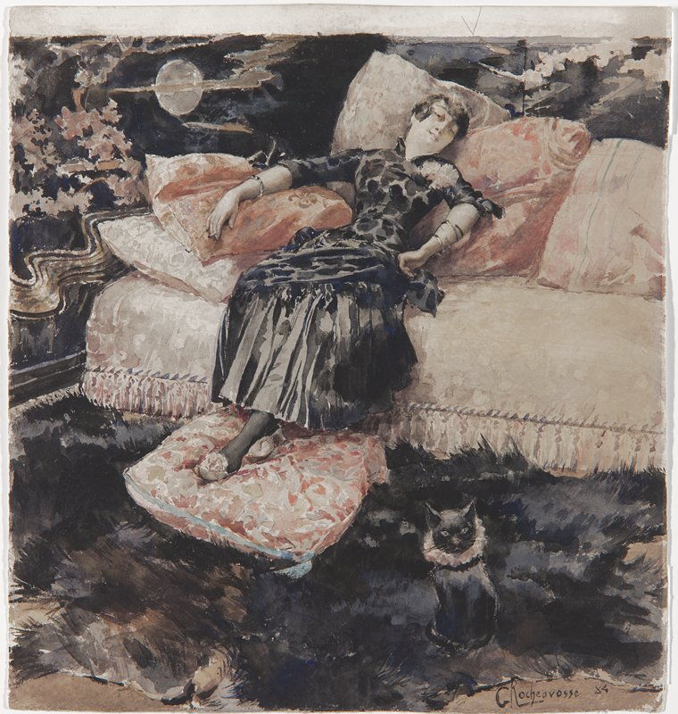
Searching for “cat”
Looking at 8 works
Reading about 4 works
Curating the exhibit
2s
0 works
8 works
2 of 4 with museum text
10 made the exhibit
Cats with opinions
10 works4 museums
Sarah Bernhardt with a Cat
CurioBernhardt dozes, but the cat in the pink ruff stares straight at you, deeply unimpressed.
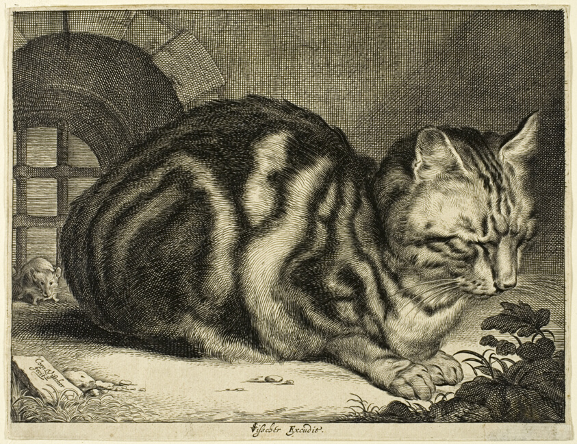
Summer: Cat on a Balustrade
CurioLook at the eyes: two narrow slits, one paw tucked under. He has heard everything you said about him and is drafting a reply.
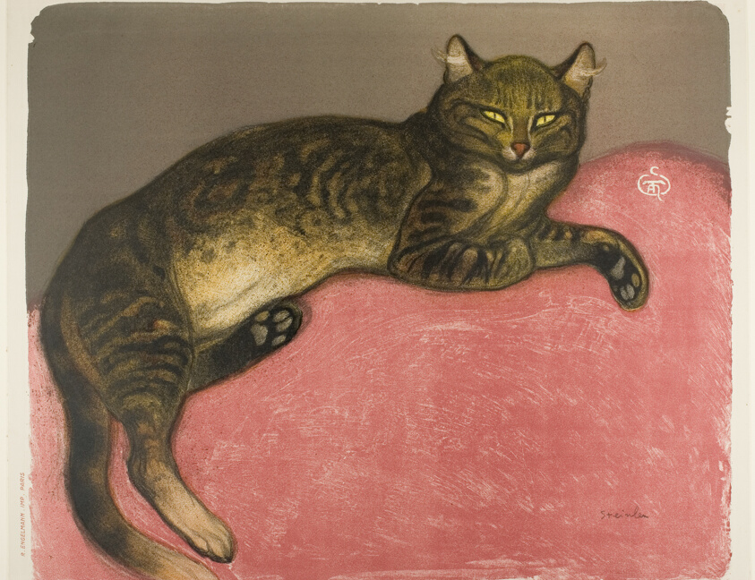
CurioHe has claimed the good cushion and is waiting to see if you object.
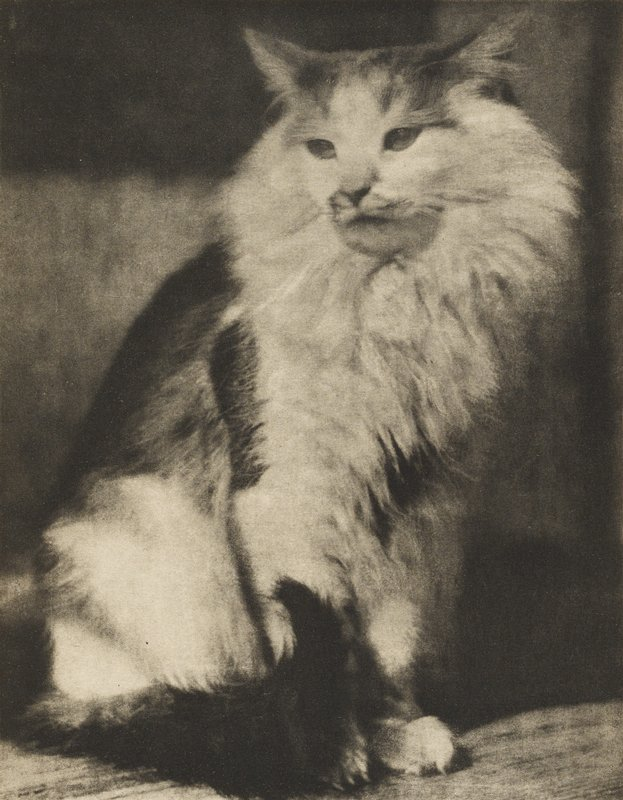
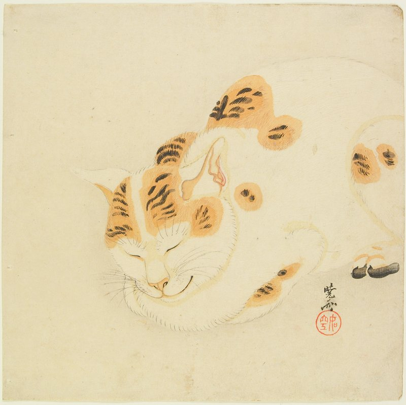
The White Cat

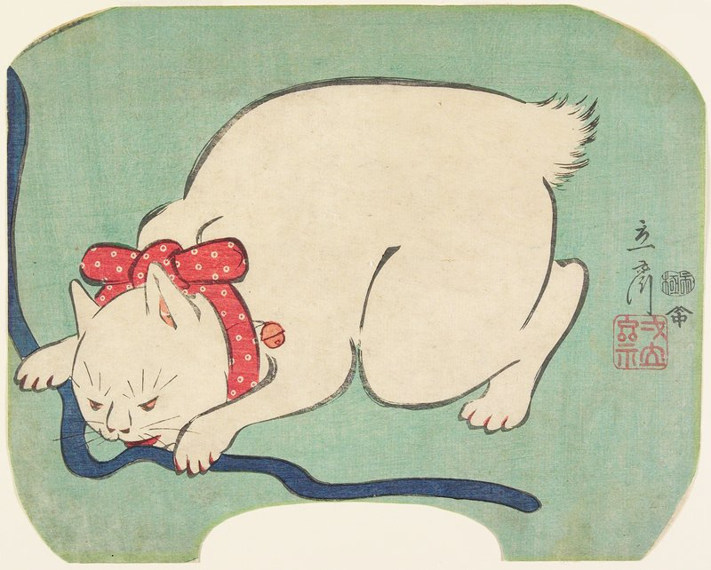